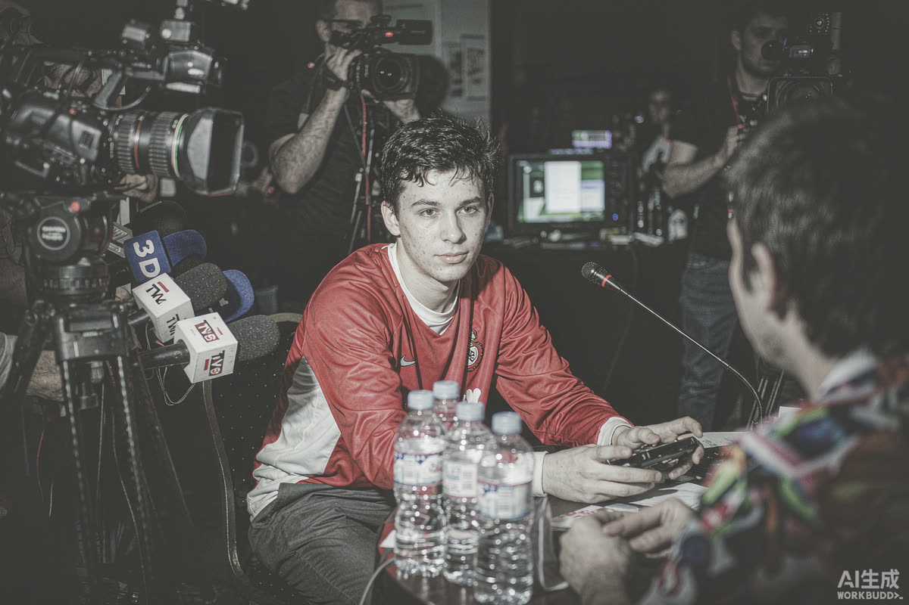

369 百胜赛后采访：为什么一句话能吵三天
369 达成职业生涯百胜，赛后采访里的表态却在赛后发酵成了更大的话题。百胜是里程碑，采访是放大镜——职业选手的每句话，都会被逐帧解读。
百胜是个人的硬里程碑：上千局的胜负里攒出一百场胜利，背后是稳定的首发位置和长期的高水平输出——这份成绩本身没有任何争议。
争议全部来自赛后采访的表态。此处编辑部只做一个事实判断：这段采访的原话并不复杂，复杂的是它击中了电竞舆论场的几根敏感神经——队伍期待、粉丝立场、选手个性，三线起火。

▲ 图注：闪光灯下的每一次表态都会被存档（号外风 · 示意）
个性派 ▸ 体育史上那些被记住的采访，全都带棱角；选手又不是公关机器人，有态度的表达恰恰是联赛稀缺的内容。
谨慎派 ▸ 职业选手的一句话牵动队友、俱乐部和赞助商，"真性情"的传播成本最终由整个团队分摊。
编辑部注意到一个更深的结构：选手的采访表态早已不是"赛后感言"，而是舆论战的组成部分——说的每一句话都在给对手、粉丝和下一场比赛定调。博弈在场外照样进行。
百胜证明他在场内的能力，采访证明他理解场外的游戏规则——顶级职业选手的完整形态，本来就是两块拼图同时在线。吵三天，恰恰说明这个联赛还有人在乎。
后续盯什么 WATCHLIST
01 · 俱乐部是否出面回应：沉默、背书还是降温，三种姿态三种信号
02 · 下一场比赛的舆论环境：表态会不会变成对手的心理战素材
03 · 选手本人的后续采访口径：收敛还是延续
你希望选手采访多真话还是多套话？评论区亮观点。
口径说明：采访内容以公开视频为准，本文不复述、不引申原话；观点仅代表编辑部；本栏目不站队、只拆事。